Fager-McGee Workforce – User Guide
This guide walks you through everything the Workforce app does: building the weekly crew schedule, requesting and approving crew, seeing where everyone is working, checking hours against Procore time cards, and (for those with access) forecasting payroll.
You don't need to read it front to back. Use the contents on the left, the search box at the top, or jump to Quick start for your role. Every screenshot uses made-up example names.
What the app does, in one minute
- Schedule – who is working on which job, each day. Organized by project, with running totals of people and hours.
- No double booking – the app won't let you put someone in two places at once, on the same job twice, over the daily hour limit, or on a day they're off.
- Requests & approvals – superintendents request crew for their jobs; the Workforce Manager approves or rejects with a reason.
- Verify Hours – each payroll week, import the Procore time cards and compare what was scheduled with what was worked.
- Projects & Employees – job details, budgets, change orders, the employee list with trades, union locals, skills and time off.
- Payroll (private) – pay rates with history and a labor-cost forecast with overtime.
Your role & what you can do
Everyone signs in with their own username. What you see depends on your role, which the Workforce Manager sets.
Workforce Manager (admin)
- Builds the schedule – entries are approved right away
- Approves or rejects superintendents' requests
- Imports time cards, employees and projects
- Manages users, settings and backups
- Sees Payroll
Superintendent
- Requests crew on the jobs where they're the listed superintendent (needs approval)
- Marks time off, verifies hours, records no-shows
- Adds change orders on their own jobs
- Can add or edit employees and projects
- No Payroll unless given access
Field staff
- Sees the approved schedule – who's where
- Sees My Schedule (their own days) if their login is linked to their employee record
- Can look at Projects, Employees and Records
- Can't change anything
Payroll access (add-on)
- A checkbox on any user, given by the manager
- Shows the 🔒 Payroll tab: pay rates and the labor-cost forecast
- Pay rates never appear anywhere else in the app
Quick start by role
Workforce Manager – first-time setup
- Sign in with the admin login. Click your name (top right) → change your password.
- Admin → Settings: check the payroll week (Wednesday), overtime rule (40 h at 1.5×), daily warning (8 h) and hard limit (12 h). See Admin.
- Employees → Import from spreadsheet…: load your field employees. See Importing.
- Projects → Import from spreadsheet…: load your active jobs.
- Open each job and set the Project manager, Superintendent, budget hours and starting hours.
- Admin → Users: create a login for each superintendent and link it to their employee record. Do the same for field staff who should see My Schedule.
- 🔒 Payroll → Pay rates: enter rates with an effective date (optional, only for payroll forecasting).
- Build next week on the Schedule page.
Workforce Manager – every week
- Check Requests on the Schedule page and approve or reject.
- Build or adjust next week's schedule (the All Jobs board is the fastest way).
- After the payroll week closes, import the Procore time cards in Verify Hours and work through anything that Differs, was Not scheduled, or has No time card.
Superintendent
- Sign in. Make sure your jobs show “Supt: your name” on the Schedule page – if not, ask the Workforce Manager.
- Click + Request crew (or the + in a day on your job) to request people. Requests show as Pending until approved.
- Check My requests for anything rejected and the reason.
- Enter time off for your crew when you hear about it – even months ahead.
- In Verify Hours, confirm hours and record no-shows with a reason.
Field staff
- Open the link on your phone and sign in with the username and password you were given.
- Add it to your home screen (see Using it on a phone).
- Tap My Schedule to see today and the coming days: job and hours.
The weekly workflow
This is how a normal week runs. The payroll week is Wednesday to Tuesday; the schedule week on screen is Monday to Sunday.
Signing in & your account
- Open the app's web address (your manager will send it).
- Type your username and password, then click Sign in.
- You stay signed in on that device for 30 days unless you sign out.
Changing your password
Click your name in the top-right corner (on a phone: tap ☰ → My account). Enter your current password and a new one of at least 8 characters, then click Update password. You also sign out from this window.
Getting around
The orange-underlined bar at the top has a tab for each area. You only see the tabs your role can use.
| Tab | What it's for | Who sees it |
|---|---|---|
| Schedule | The weekly crew schedule (three views), requests, time off | Everyone |
| My Schedule | Your own upcoming days | Users linked to an employee record |
| Verify Hours | Payroll week review: time card import, actual hours, no-shows | Manager, superintendents |
| Projects | Jobs, PM/superintendent, budgets, change orders | Everyone (editing: manager, superintendents) |
| Employees | People, trades, union locals, skills, time off, attendance | Everyone (editing: manager, superintendents) |
| Records | Search past work and export to Excel | Everyone |
| 🔒 Payroll | Pay rates and labor-cost forecast | Users with payroll access |
| Admin | Users, settings, activity log, backup | Workforce Manager |
Most lists open a window when you click a row. Windows close with Cancel, the ×, the Esc key, or by clicking outside them.
Using it on a phone
The app works in any phone browser. On a phone, the schedule shows one day at a time – tap the day buttons (Mon–Sun) to switch days. Tap ☰ (top left) to open the menu.
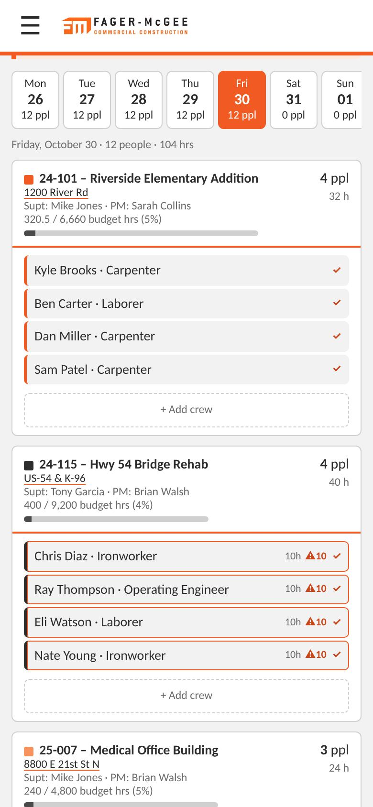
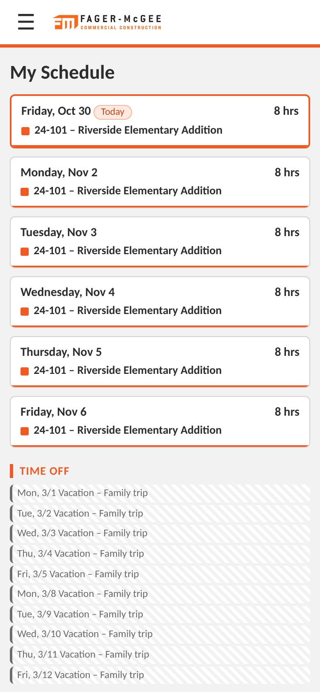
Add it to your home screen (works like an app)
- iPhone: open the link in Safari → tap the Share button (square with an arrow) → Add to Home Screen.
- Android: open the link in Chrome → tap ⋮ → Add to Home screen.
The Schedule page
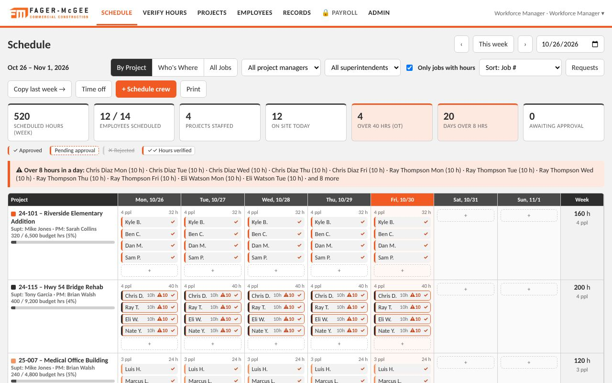
The top of the page
- Week buttons – ‹ and › move a week; This week jumps back; the date box jumps to any week.
- Tiles – scheduled hours, how many employees are scheduled, projects staffed, people on site today, people over 40 hours (overtime), days over 8 hours, and requests awaiting approval.
- Legend – what the markers on each entry mean (see Symbols & colors).
- Over 8 hours banner – lists anyone scheduled more than 8 hours in a day.
The three views
| View | Shows | Best for |
|---|---|---|
| By Project | One row per job, one column per day, with each crew member as a name chip. Totals per day, per job and per week. Under each job: superintendent, PM and hours used vs budget. | Seeing each job's crew and labor hours |
| Who's Where | One row per person, showing their job each day and weekly hours. | Finding where someone is; spotting open people |
| All Jobs (computer) | One day: every job side by side, and available crew on the left. Drag and drop to schedule. | Building the schedule fast |
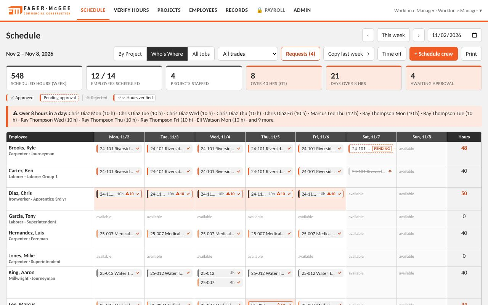
Scheduling a crew
- Click + Schedule crew (superintendents: + Request crew). Shortcut: click the + in a job's day, or an “available” box in Who's Where – that job, day or person is filled in for you.
- Pick the Project and the Total hours scheduled per day (usually 8).
- Tick the days. Mon–Fri ticks the work week; clear unticks all.
- Optionally type a Task / scope (e.g. “Level 2 framing”).
- Tick the people. Use the search box and the trade or skill filters to narrow the list (for example, everyone with OSHA 30).
- Click Schedule (or Send request).
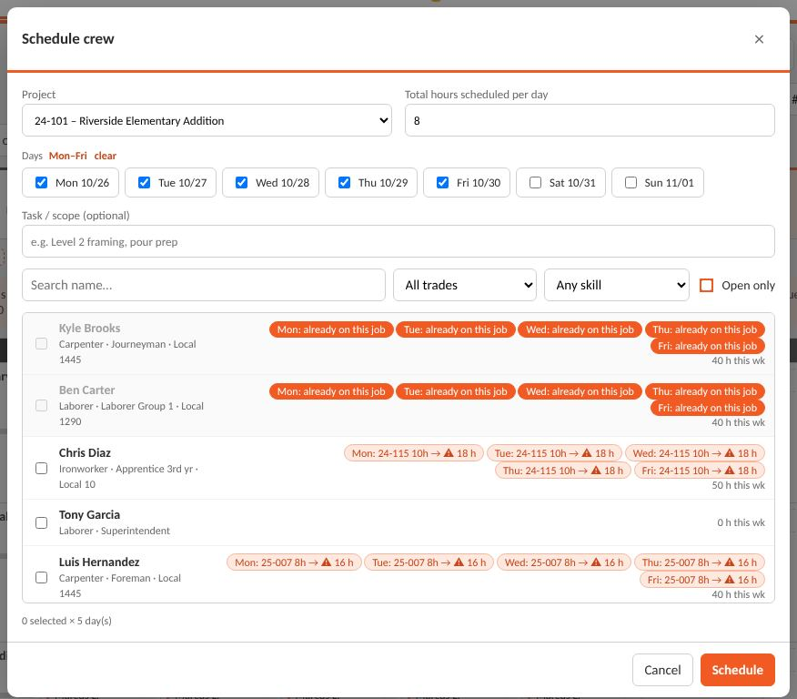
- Open only (ticked) hides people who are already booked on the chosen days. Untick it to add someone for a split day.
- An orange tag like Mon: 24-101 8h → ⚠ 11 h means adding them would put them over 8 hours that day – allowed, but flagged.
- If anything couldn't be saved (for example, someone is off), the window lists who was skipped and why, and saves everyone else.
Changing or removing an entry
Click a name chip on the schedule. You can change the project, date, hours or task and click Save, or click Remove. Superintendents can only change entries on their own jobs; other entries open read-only.
Split days (two jobs in one day)
A person can work more than one job in a day – for example 4 hours at the plant in the morning and 4 at the medical office in the afternoon.
- First shorten the hours on their existing entry (click it, change 8 to 4, Save).
- In Who's Where, hover over their day and click + split (or use Schedule crew with Open only unticked).
- Pick the second job and the hours, then save. Both jobs show in that day.
Double booking & hour limits
| Situation | What happens |
|---|---|
| Same person on the same job twice in one day | Blocked |
| Person is off that day (time off) | Blocked |
| Day total would go over the hard limit (12 h by default) | Blocked |
| Day total goes over 8 hours | Saved, with an ⚠ warning |
| Week total over 40 hours | Saved; counted in the “Over 40 hrs (OT)” tile and shown in orange |
| Two jobs in one day within the limits | Allowed (split day) |
The manager can change the 8-hour warning and 12-hour limit in Admin → Settings.
All Jobs – drag & drop (computer)
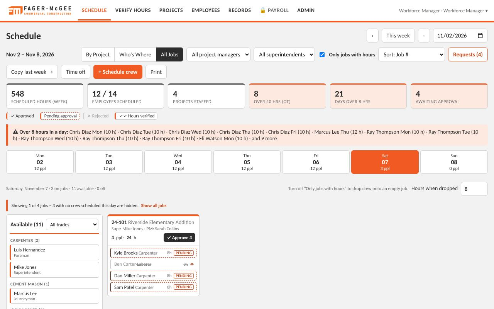
- Click All Jobs, then pick a day with the day buttons.
- Drag a person from Available onto a job to schedule them (superintendents: to request them). They get the hours shown in Hours when dropped.
- Drag a person from one job to another to move them.
- Drag a person back to Available to take them off the job.
- Click any card to open it. Click an available person to open Schedule crew with them filled in.
- Managers see ✓ Approve N on a job with pending requests.
- Superintendents can only drop onto their own jobs – other columns are locked.
- With Only jobs with hours ticked, empty jobs are hidden. Untick it to drop someone onto a job that has nobody yet.
Copy last week
Rolls crews forward so you don't rebuild a steady week from scratch.
- Go to the week you want to fill, then click Copy last week →.
- Check the From and Into weeks, and pick one project or all projects.
- Click Copy. Anyone who's off or would be double booked is skipped and listed.
Filters, sorting & printing
- Only jobs with hours – hides jobs with nobody scheduled that week (or that day on phone/All Jobs). A note says how many are hidden, with a Show all jobs link. Your choice is remembered on each device.
- All project managers / All superintendents – show only one PM's or superintendent's jobs.
- Sort – by job number, project manager or superintendent.
- All trades (Who's Where) – show only carpenters, laborers, etc.
- Print (computer) – prints the week with the company logo, for the job trailer.
Crew requests & approvals
Superintendents request crew for their jobs. The Workforce Manager approves or rejects them. The manager's own scheduling is approved right away.
For superintendents
- You can request crew only on jobs where you are the listed superintendent, and your login must be linked to your employee record. If + Request crew says you have no projects, ask the manager.
- Requests show with a dashed orange outline and Pending.
- My requests lists your pending requests and anything rejected in the last two weeks, with the reason.
- To ask again after a rejection, click the struck-through entry, adjust it and click Resubmit – or request someone else.
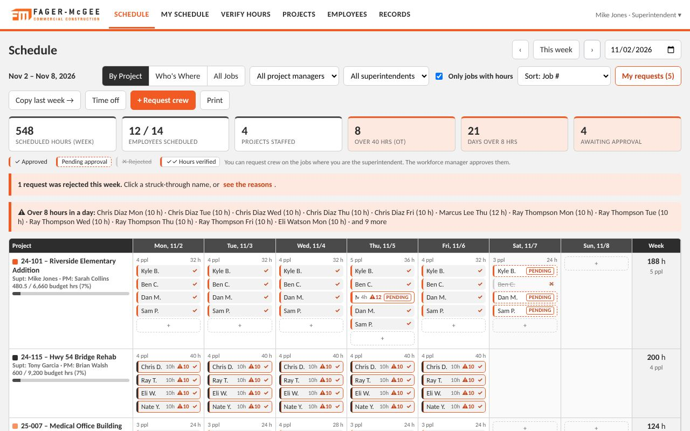
For the Workforce Manager
- Click Requests (N) on the Schedule page.
- Tick requests and click ✓ Approve selected, or ✓ Approve all.
- To reject, tick them, click ✕ Reject selected… and type a reason (required) – the superintendent sees it.
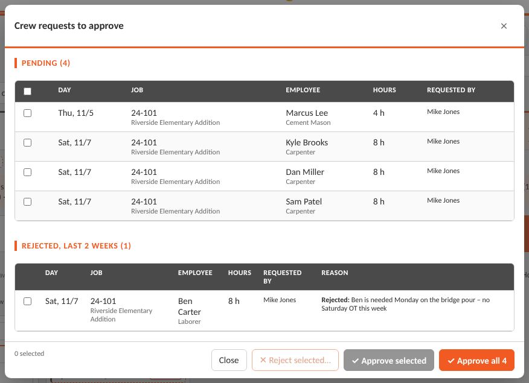
You can also approve or reject from an entry itself (click its chip), or with ✓ Approve N on a job in All Jobs.
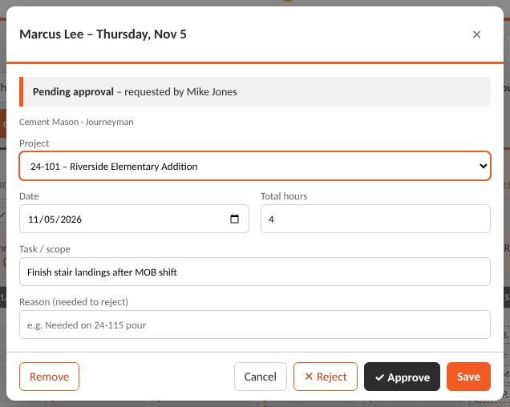
Time off
Enter vacations, medical leave, jury duty, union business and so on – for any future dates. When that week comes up on the schedule, the person already shows as Off and can't be scheduled those days.
From the employee's record (best for planned time off)
- Employees → click the person.
- In Time off, choose From and To dates, a reason, and an optional note.
- Leave Weekdays only ticked to skip Saturdays and Sundays. Click Add time off.
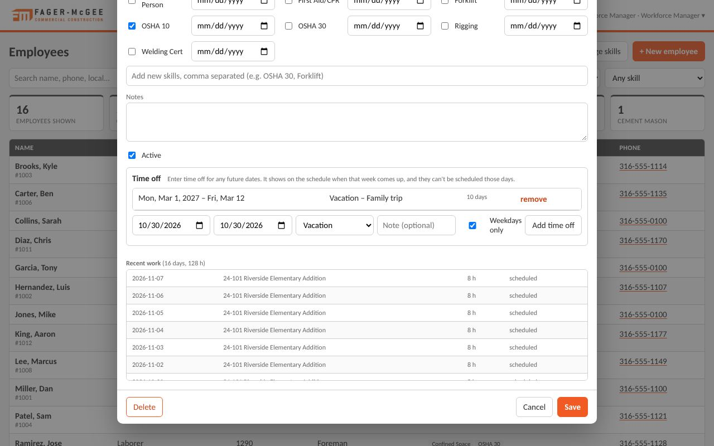
From the Schedule page
Click Time off, pick the employee, dates and reason, and save. To remove a day, click the Off box on the schedule, or use remove on the employee's record.
My Schedule (field staff)
Shows your own upcoming days: the date, the job and the hours. Today is at the top with an orange outline. Past days are folded under Earlier days.
- Only approved days appear. If you expected to see something and don't, it may still be waiting for approval.
- If you see “not linked to an employee record”, ask the Workforce Manager to link your login.
Verify Hours
Verify Hours works on the payroll week (Wednesday–Tuesday unless changed in Settings). It's where you confirm what was actually worked.
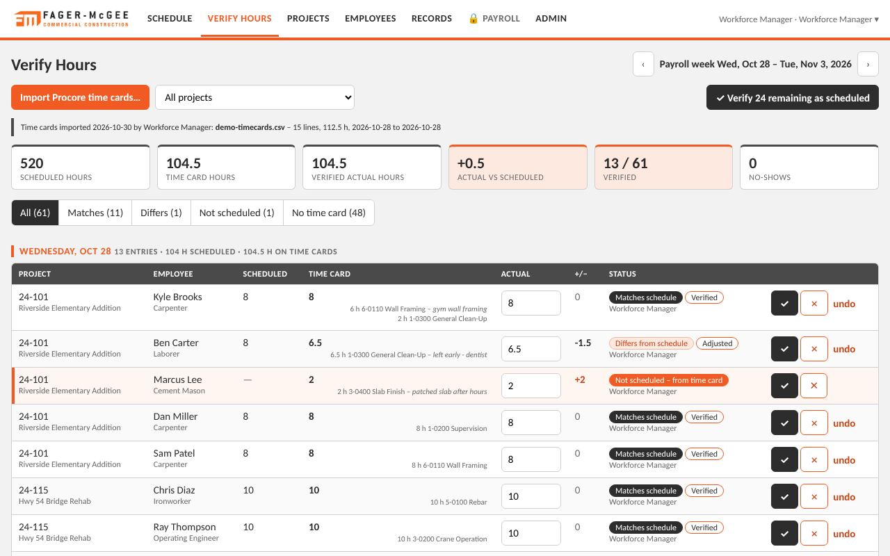
The top of the page
- ‹ / › move one payroll week.
- A line shows which time card files were imported for this week, by whom and when.
- Tiles: scheduled hours, time card hours, verified actual hours, actual vs scheduled, how many entries are verified, and no-shows.
- Filter buttons: All, Matches, Differs, Not scheduled, No time card.
Importing Procore time cards (Workforce Manager)
- In Procore, run the time card report for the payroll week and export it as CSV.
- In Verify Hours, click Import Procore time cards… and choose the file.
- Read the preview: dates, number of lines, people and hours, plus how many match the schedule, differ, weren't scheduled, have no time card, or didn't match an employee or job.
- Click Import N lines. The page jumps to that payroll week.
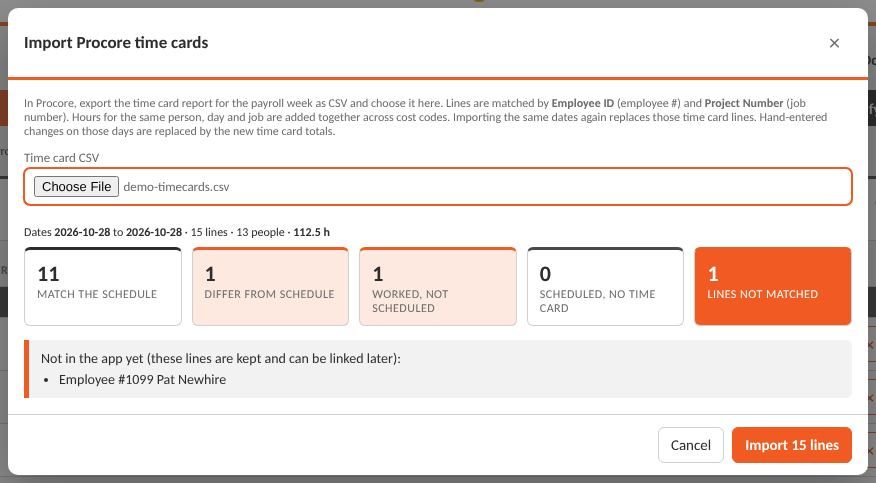
How lines are matched: Procore's Employee ID must equal the employee's Employee # in the app, and Procore's Project Number must equal the job number. A person's hours for the same day and job are added together across cost codes (for example 6 h framing + 2 h clean-up = 8 h).
Reviewing & adjusting hours
| Status | Meaning | What to do |
|---|---|---|
| Matches schedule | Time card hours = scheduled hours | Nothing – already verified |
| Differs from schedule | Time card hours ≠ scheduled (row tinted orange) | Check the cost code notes; adjust if needed |
| Not scheduled – from time card | Someone worked a job/day that wasn't on the schedule. The app adds it so the hours count toward the job and payroll. | Keep it, or remove it with ✕ if it's wrong |
| No time card | Scheduled, but nothing on the time card | Mark a no-show (✗) with a reason, or confirm the hours (✓) |
- Change a number: type in the Actual box and click ✓. The time card number stays visible, and the row notes “Adjusted by hand (time card X h)”.
- The +/− column shows actual minus scheduled.
- Under the time card number you'll see each cost code line and its Procore description.
- undo clears a verification so the entry is back to unverified.
- ✓ Verify N remaining as scheduled confirms every still-unverified entry up to today at its scheduled hours – handy when there's no time card file.
No-shows
Click ✗ on the row. Choose a reason (Sick, Family emergency, No call / no show, Weather, Transportation, Injury, Personal, Other), whether it was excused, and any details. A reason is required. It's saved on the employee's record under No-shows, so you can review attendance by person.
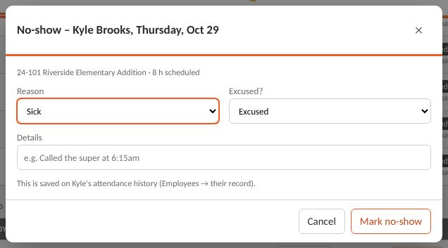
Time card lines that didn't match
If the time card has someone who isn't in Employees, or a job that isn't in Projects, those lines are listed at the bottom of Verify Hours with the reason. Their hours don't count until they're linked.
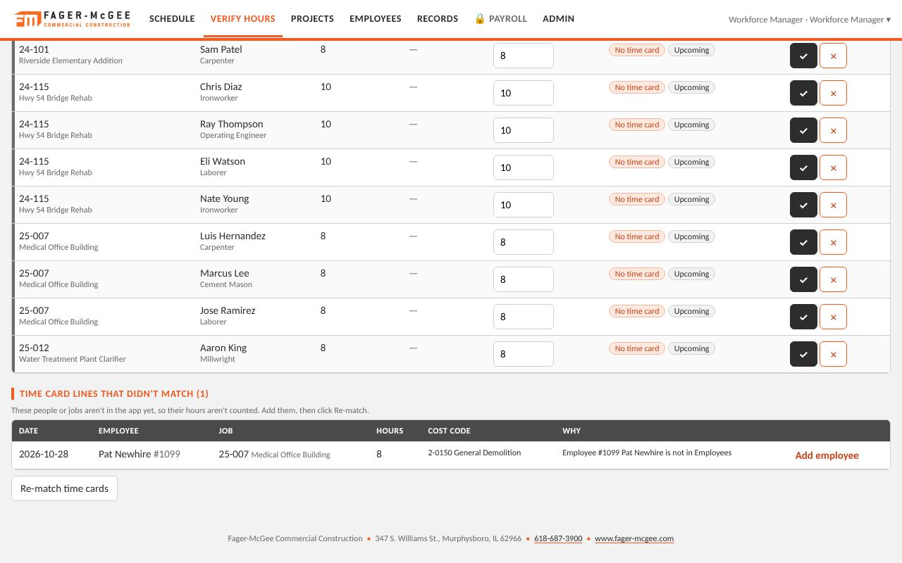
- Click Add employee or Add job on the line. The short form is filled in from the time card – check it and click Add and re-match.
- Or add/fix the person or job yourself (for example, correct an Employee # so it matches Procore), then click Re-match time cards.
🔒 Payroll (private)
Only people with payroll access see this tab. Pay rates never appear anywhere else.
Pay rates (with history)
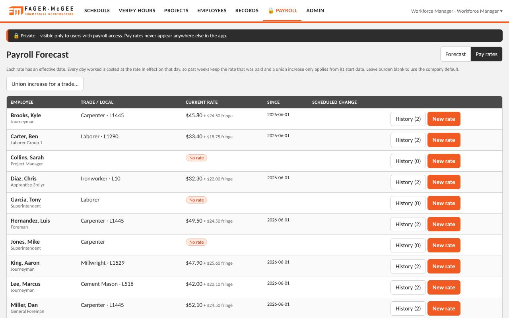
- Each rate has an effective date. Every day worked is costed at the rate in effect on that day – so past weeks keep the rate actually paid, and a raise only applies from its start date.
- New rate – base $/hr, union fringe $/hr, burden % (leave blank to use the company default) and a note.
- History – every rate with who entered it. Use remove only to fix a mistake.
- Union increase for a trade… – add the same raise (base and fringe) for everyone in a trade from a date, in one step.
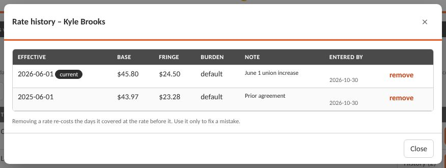
Labor-cost forecast
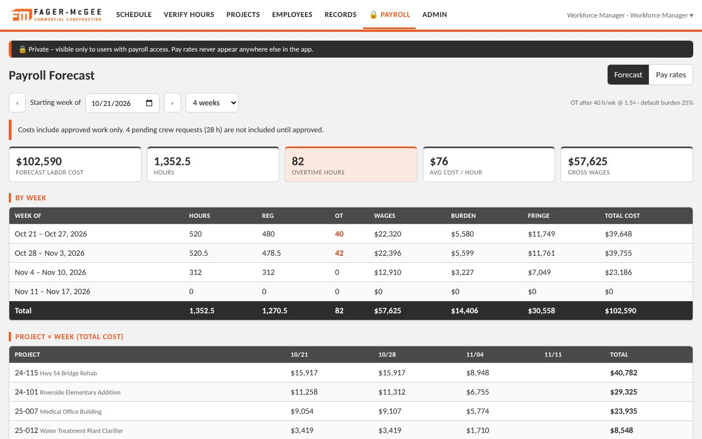
- Pick the starting payroll week and how many weeks (1–26). Pick a past week to see what labor actually cost.
- Uses verified actual hours where entered, otherwise scheduled hours. Only approved work is counted – the page tells you how many pending requests were left out.
- Overtime: hours over 40 in a payroll week are paid at 1.5× (both adjustable in Settings), charged to whichever job they were worked on.
- Cost = wages (regular + overtime) + burden (wages × burden %) + fringe (all hours × fringe rate).
- If someone has no pay rate, they're listed in a warning and costed at $0 – click Enter rates.
Projects
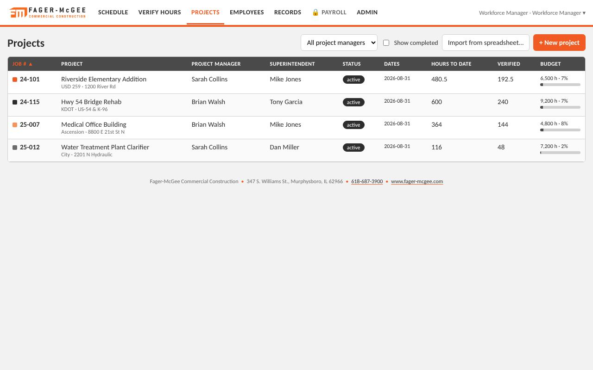
- Show completed includes finished jobs. All project managers shows one PM's jobs.
- Hours to date = starting hours + approved scheduled/verified hours. Verified = hours confirmed in Verify Hours.
- The Budget bar fills as hours are used: grey normally, orange past 85%, dark orange over 100%.
Adding or editing a project
Click + New project or a row. Fields: job number and name (required), customer/GC, project manager, superintendent / foreman, status, original budget hours, starting hours, start and end dates, board color, site address (opens in maps on a phone) and notes.
- Status: Planned, Active, On hold, Complete. Planned and Active jobs appear on the schedule; Complete jobs drop off but keep their history.
- The superintendent list shows employees whose classification contains “Superintendent” or “Foreman”. The project manager list shows employees classified “Project Manager”. If someone is missing, fix their classification in Employees.
- A project can only be deleted if it has no schedule history – otherwise mark it Complete.
Budget, starting hours & change orders
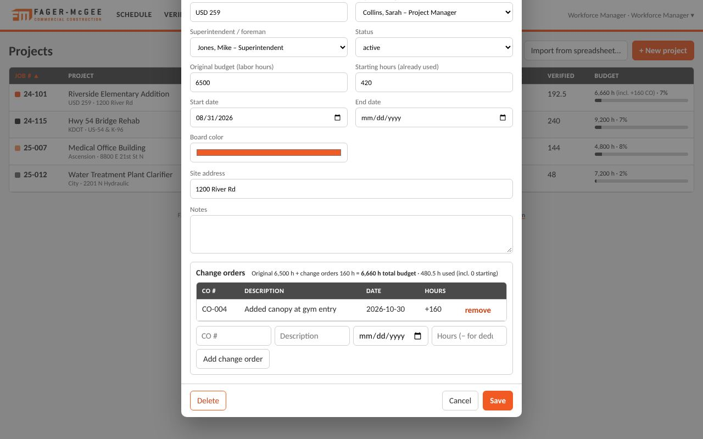
- Original budget – labor hours from the estimate.
- Starting hours – hours already used before the job was set up in the app. They're added to hours to date.
- Change orders – at the bottom of the window (after the project is saved). Enter CO #, description, date and hours, then Add change order. Use a negative number for a deduct.
- Total budget = original + all change orders. It's what the budget bars on the Projects list and Schedule use.
Employees
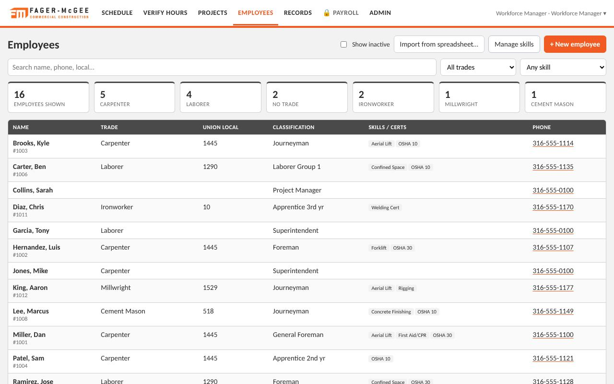
- Search by name, phone, local or employee #. Filter by trade or skill. Show inactive includes former employees.
- Tap a phone number on a phone to call.
- Expired certifications show in solid orange.
Adding or editing an employee
Click + New employee or a row. Fields: first and last name (required), Employee # (must match Procore's Employee ID for time cards), phone, email, hire date, union trade, union local, classification, skills and notes.
| Classification contains… | Effect |
|---|---|
| Superintendent, Foreman (e.g. General Foreman) | Can be picked as a project's superintendent |
| Project Manager | Can be picked as a project's PM; left out of crew lists (office staff) |
- Skills & certifications – tick from the list, set an expiration date if there is one, or type new ones (comma separated). Manage skills adds to the master list.
- Active – untick when someone leaves. They disappear from scheduling but all their history stays. (Deleting someone with history also just marks them inactive.)
- Also on the record: Time off, No-shows with reasons, and Recent work.
Importing from spreadsheets (Workforce Manager)
Employees and Projects each have Import from spreadsheet…. It's the fastest way to load a list and to keep it up to date later.
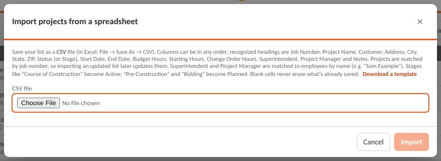
- Save your list as CSV (Excel: File → Save As → CSV UTF-8). Columns can be in any order.
- Click Import from spreadsheet… and choose the file.
- Check the preview: New, Update, Skipped and Error rows. Nothing is saved yet.
- If there are errors, fix those rows in the file and choose it again. Then click Import.
Employee file columns
Employee #, First Name, Last Name, Phone, Email, Trade, Union Local, Classification, Hire Date, Active (Yes/No), Skills (separate with ;), Notes. Rows whose trade or classification is Clerical or CLER are skipped (you can change that list).
Project file columns
Job Number, Project Name, Customer, Address, City, State, ZIP, Status (or Stage), Start Date, End Date, Budget Hours, Starting Hours, Change Order Hours, Superintendent, Project Manager, Notes. Procore stages are understood: Course of Construction and Warranty → Active; Pre-Construction and Bidding → Planned. Superintendent and Project Manager are matched to employees by name – import employees first.
Records & Excel export
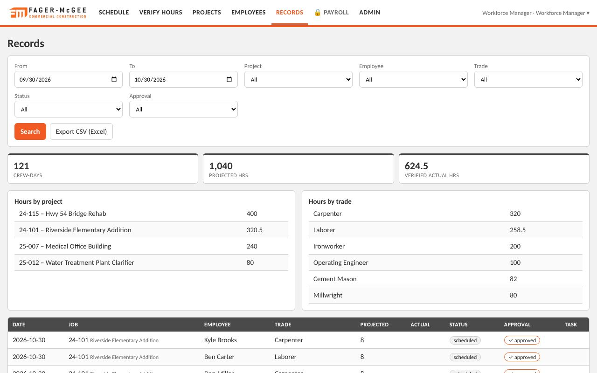
- Set the From and To dates (the last 30 days by default).
- Optionally pick a project, employee, trade, status or approval.
- Click Search. Totals by project and trade show where labor hours went.
- Click Export CSV (Excel) to download every matching row (including no-show and rejection notes).
Admin: users, settings, backup (Workforce Manager)
Users
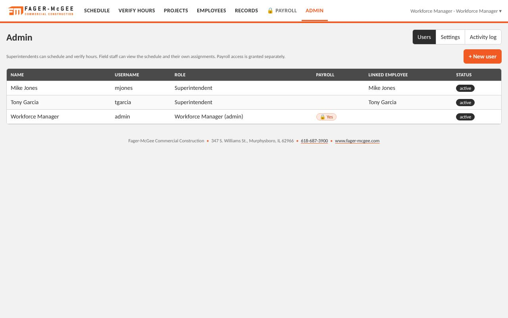
- Click + New user (or a row to edit).
- Enter full name, username and a password of 8+ characters. Choose the role: Workforce Manager, Superintendent or Field staff.
- Linked employee – pick their employee record. Superintendents need this to request crew; field staff need it for My Schedule.
- Tick 🔒 Can view private payroll only for people who should see pay.
- To reset a forgotten password, open the user and type a new one. Untick Account active to turn off a login.
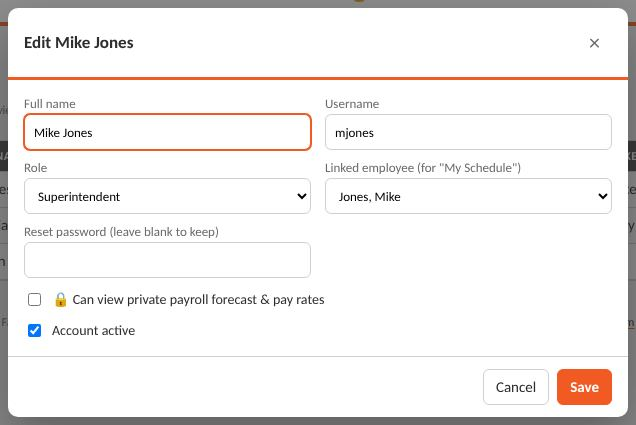
Settings
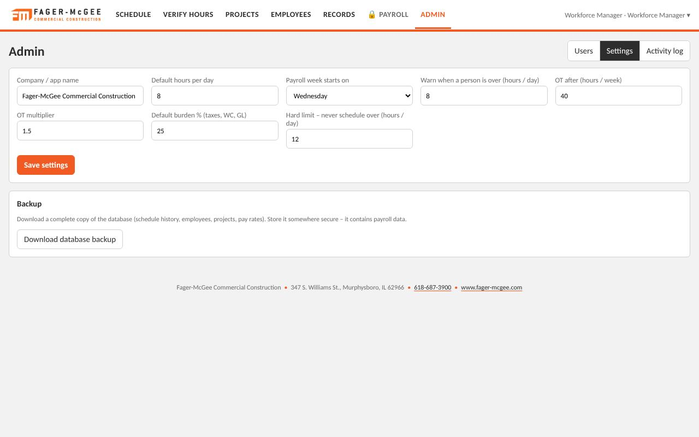
| Setting | Default | What it does |
|---|---|---|
| Default hours per day | 8 | Pre-fills hours when scheduling |
| OT after (hours / week) | 40 | Weekly overtime threshold for payroll |
| OT multiplier | 1.5 | Overtime pay rate |
| Default burden % | 25 | Payroll taxes, workers' comp, insurance – used when a person's rate has none |
| Hard limit (hours / day) | 12 | Scheduling above this is blocked |
| Payroll week starts on | Wednesday | Verify Hours week and payroll overtime week |
| Warn when over (hours / day) | 8 | Scheduling above this is saved with a warning |
Backup
Download database backup saves one file with everything. Download one weekly and keep it somewhere secure – it contains pay rates.
Activity log
Shows who did what and when: scheduling, approvals, imports, rate changes and so on. Times are shown in UTC (world time): subtract 5 hours for Central time in summer, or 6 hours in winter.
Symbols & colors
| You see | It means |
|---|---|
| Kyle B. ✓ | Approved schedule entry |
| Kyle B. ✓✓ | Approved, and hours verified |
| Kyle B. PENDING | Requested by a superintendent, waiting for approval |
| Kyle B. ✕ | Rejected (click to see the reason) |
| Off – Vacation | Time off – can't be scheduled |
| Kyle B. 10h | Hours other than 8 |
| ⚠10 / orange outline | Scheduled over 8 hours that day (the number is the day's total) |
| 6h TC | Worked but not scheduled – added from the time card |
| Orange weekly hours (Who's Where) | Over 40 hours this week (overtime) |
| Orange column header | Today |
| Budget bar grey / orange / dark orange | Under 85% / 85–100% / over budget |
| Solid orange skill tag | Expired certification |
Glossary
| Term | Meaning |
|---|---|
| Entry / assignment | One person on one job on one day, with hours |
| Crew-day | One person working one day (used in Records totals) |
| Split day | A person on two or more jobs in the same day |
| Payroll week | The pay period – Wednesday to Tuesday by default |
| Scheduled hours | Hours planned on the schedule |
| Time card hours | Hours from the imported Procore time card |
| Actual hours | The hours that count – from the time card, or typed in by hand |
| Verified | Actual hours have been confirmed |
| Starting hours | Hours used on a job before it was set up in the app |
| Change order (CO) | Added (or deducted) labor hours on a job's budget |
| Total budget | Original budget + change orders |
| Burden | Payroll taxes, workers' comp and insurance as a % of wages |
| Fringe | Union benefits paid per hour |
| Effective date | The day a pay rate starts applying |
Frequently asked questions
I forgot my password.
It says “Too many attempts”.
Can I use it on my phone?
Why don't I see the Payroll, Verify Hours or Admin tabs?
Why is a person greyed out when I try to schedule them?
How do I put someone on two jobs in one day?
I got a “⚠ over 8 hours” warning. Did it save?
It says “would have 14 hrs (daily limit 12)”.
How do I schedule a Saturday?
My crew can't see the schedule I made.
I'm a superintendent and it says I have no projects to request crew for.
My request was rejected. What now?
Why did my approved entry go back to Pending?
The schedule list is too long.
How do I print the week for the job trailer?
Where's the All Jobs view on my phone?
Someone told me they'll be off for three weeks next spring. Can I enter it now?
I can't add time off – it says they're already scheduled.
How do I mark a no-show?
Where can I see someone's attendance history?
What's the difference between Scheduled, Time card and Actual?
The time card has someone we didn't schedule.
A time card line didn't match anyone.
The time card says “Bobby” but our employee is “Robert”. Is that a problem?
I re-imported time cards and my hand changes disappeared.
Can I import a partial week, or fix one day?
We don't have a time card file this week. Can I still verify?
Why does Verify Hours start on Wednesday?
What are starting hours?
How do change orders affect the budget?
Someone isn't in the Superintendent or Project Manager list.
An employee left the company.
Can I delete a project?
How do I add a new hire?
Who can see pay rates?
Will a union raise change past payroll numbers?
Why doesn't the forecast include some hours?
How is overtime calculated?
Can I get the data into Excel?
How do I back up the data?
I don't see the latest update to the app.
Can field staff change anything?
Troubleshooting
| Problem | Try this |
|---|---|
| A page looks out of date | Refresh (Ctrl/Cmd + Shift + R). On a phone, close and reopen. |
| “Please sign in” appears | Your session ended. Sign in again. |
| A button does nothing | You may not have permission for that action, or a window is open behind – press Esc and try again. |
| Import says the file has no rows | Make sure it's saved as CSV with a heading row on line 1. |
| Import shows errors | Each error row says what's wrong (e.g. a date that isn't a date). Fix those rows in the file and choose it again. |
| Someone can't be scheduled | Check for time off, an existing entry on the same job, or the 12-hour limit. |
| Hours look wrong on a job | Check starting hours and change orders on the project, and Verify Hours for that week. |
Still stuck?
Contact your Workforce Manager. For account, password or permission questions, they can fix it in Admin → Users.